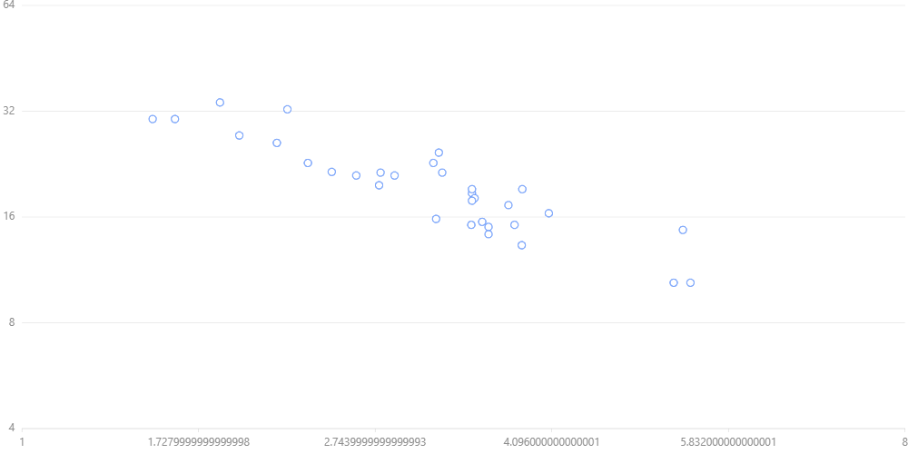

Scales¶
format:
chart.scale(variable,type,min,max,values,range,tickCount,formatter,tickMethod,alias,nice)
variables are optional.
e.g.
chart = G2.Chart(height=500, width=1000)
chart.data(df)
chart.point().position('wt*mpg')
chart.scale('wt',type='pow',exponent=3)
chart.scale('mpg',type = 'log', base=2, min=4)
chart.render()
Output:
There are several types. These type requires additional optional arguments.
types:
cat: classification metric
timeCat: time classification metrics
linear: linear metric
time: continuous time measurement
log: log metrics
pow: pow measure
quantize: segmentation metric, user can specify uneven segmentation
quantile: equal measure, automatically calculate the segment according to the distribution of data
identity: constant measure
There are suitable defaults according to the nature of data if you do not specify manually.
alias: string , name of the axis
values: domain
range: [min,max]
formatter: a javascript function definition as a string
tickCount: number of ticks
tickMethod: a javascript function definition as a string to calculate ticks.
nice: ‘true’/’false’ nice numbers
additional:
base: base for type
logexponent: exponent for typ
powticks: list of values for ticks in
quantize